library(tidyverse)
library(tidylog)
library(skimr)
library(visdat)
library(assertthat)
theme_set(theme_bw())12 Covid EDA
12.1
- This EDA will start in class and continue on to the lab
- We’re interested in the role of social distancing in the July 2020 Covid wave in California
12.2 The standard narrative
The standard narrative about the July 2020 wave goes like this:
- California had some of the first confirmed cases of Covid-19 in the US
- California was also the first state to institute a stay-at-home order and encourage social distancing
- These social distancing policies are why California did not experience the large first wave in March 2020 (contrast NYC)
- Starting in May 2020, these policies were relaxed and “lockdown fatigue” meant that people were ignoring them anyways
- This is why California did experience a more significant wave in July 2020
Our research question: Is reduced social distancing (measured using cellphone tracking data) correlated with increased Covid-19 case counts 4 weeks later?
In class, we’ll just be looking at the case counts.
12.3 Reflexivity
(For time, you’ll do these on your own as part of the lab.)
12.4 Setup
12.5 Data
To save some time in class, I’ve prepared a CSV that combines three datasets:
- Covid-19 case and death counts, at the county level, collected by the New York Times
- Estimated county populations in 2018, from the US Census’ American Community Survey
- “Mobility data,” based on cellphone tracking, from Google
The dataset has also been filtered down to California.
12.6 Get the data
- This week’s lab on GitHub
data->covid.csv-> “Download” (right-click and copy)
covid_file = file.path('data', 'covid.csv')
covid_url = 'https://github.com/data-science-methods/lab_w06_covid/raw/main/data/covid.csv'
if (!file.exists(covid_file)) {
download.file(covid_url, covid_file)
}
## Original version
# covid_df = read_csv(covid_file, show_col_types = FALSE)
## With daily change
covid_df = read_csv(covid_file, show_col_types = FALSE) |>
group_by(county) |>
mutate(across(.cols = c(cases, deaths),
.fns = list(new = daily_new), date)) |>
ungroup() |>
mutate(across(.cols = c(matches('cases'), matches('deaths')),
.fns = list(rate = ~ .x / population * 100000)))group_by: one grouping variable (county)mutate (grouped): new variable 'cases_new' (double) with 1,737 unique values and <1% NA new variable 'deaths_new' (double) with 168 unique values and <1% NAungroup: no grouping variablesmutate: new variable 'cases_rate' (double) with 24,351 unique values and 0% NA new variable 'cases_new_rate' (double) with 9,753 unique values and <1% NA new variable 'deaths_rate' (double) with 8,485 unique values and 0% NA new variable 'deaths_new_rate' (double) with 1,056 unique values and <1% NA12.7 Some quick data checking
skim(covid_df)| Name | covid_df |
| Number of rows | 33322 |
| Number of columns | 19 |
| _______________________ | |
| Column type frequency: | |
| character | 3 |
| Date | 1 |
| numeric | 15 |
| ________________________ | |
| Group variables | None |
Variable type: character
| skim_variable | n_missing | complete_rate | min | max | empty | n_unique | whitespace |
|---|---|---|---|---|---|---|---|
| county | 0 | 1 | 4 | 15 | 0 | 58 | 0 |
| state | 0 | 1 | 10 | 10 | 0 | 1 | 0 |
| fips | 0 | 1 | 5 | 5 | 0 | 58 | 0 |
Variable type: Date
| skim_variable | n_missing | complete_rate | min | max | median | n_unique |
|---|---|---|---|---|---|---|
| date | 0 | 1 | 2020-01-25 | 2021-10-12 | 2020-12-29 | 627 |
Variable type: numeric
| skim_variable | n_missing | complete_rate | mean | sd | p0 | p25 | p50 | p75 | p100 | hist |
|---|---|---|---|---|---|---|---|---|---|---|
| cases | 0 | 1.00 | 38007.85 | 128692.55 | 1.00 | 479.25 | 4458.00 | 23744.50 | 1473123.00 | ▇▁▁▁▁ |
| deaths | 0 | 1.00 | 590.84 | 2290.48 | 0.00 | 5.00 | 55.00 | 299.00 | 26346.00 | ▇▁▁▁▁ |
| population | 0 | 1.00 | 708598.07 | 1508235.90 | 1146.00 | 53932.00 | 186661.00 | 765935.00 | 10098052.00 | ▇▁▁▁▁ |
| retail | 15286 | 0.54 | -25.50 | 16.78 | -100.00 | -35.00 | -25.00 | -16.00 | 63.00 | ▁▃▇▁▁ |
| grocery | 16225 | 0.51 | -5.84 | 13.46 | -74.00 | -14.00 | -7.00 | 1.00 | 86.00 | ▁▆▇▁▁ |
| parks | 18301 | 0.45 | 2.16 | 40.35 | -83.00 | -22.00 | -3.00 | 18.00 | 323.00 | ▇▆▁▁▁ |
| transit | 18639 | 0.44 | -29.67 | 27.29 | -88.00 | -49.00 | -32.00 | -15.00 | 97.00 | ▃▇▂▁▁ |
| workplaces | 14112 | 0.58 | -30.74 | 15.01 | -87.00 | -39.00 | -31.00 | -20.00 | 11.00 | ▁▂▇▇▁ |
| residential | 17022 | 0.49 | 10.82 | 6.33 | -7.00 | 6.00 | 10.00 | 14.00 | 37.00 | ▁▇▆▂▁ |
| cases_new | 58 | 1.00 | 144.62 | 680.67 | -1157.00 | 0.00 | 13.00 | 77.00 | 29174.00 | ▇▁▁▁▁ |
| deaths_new | 58 | 1.00 | 2.11 | 12.92 | -423.00 | 0.00 | 0.00 | 1.00 | 930.00 | ▁▇▁▁▁ |
| cases_rate | 0 | 1.00 | 4714.32 | 4521.80 | 0.01 | 541.96 | 3567.44 | 7764.35 | 23466.41 | ▇▃▂▁▁ |
| cases_new_rate | 58 | 1.00 | 20.11 | 45.88 | -211.66 | 0.00 | 6.53 | 21.91 | 2055.69 | ▇▁▁▁▁ |
| deaths_rate | 0 | 1.00 | 58.83 | 65.99 | 0.00 | 5.53 | 38.53 | 88.80 | 422.27 | ▇▂▁▁▁ |
| deaths_new_rate | 58 | 1.00 | 0.24 | 1.04 | -31.56 | 0.00 | 0.00 | 0.05 | 48.63 | ▁▇▁▁▁ |
12.8 Variables
county,state, andfipsare all geographic identifiers, and complete- 58 unique values for both
countyandfips - How many counties does California have?
- 58 unique values for both
dategives the date, is also completecasesanddeathscome from the NYT covid datapopulationcomes from the Censusretail,grocery,parks,transit,workplaces, andresidentialcome from the Google Mobility data- Much lower completion rate
12.9 Too many timeseries plots
ggplot(covid_df, aes(date, cases)) +
geom_line() +
facet_wrap(vars(county),
scales = 'free_y')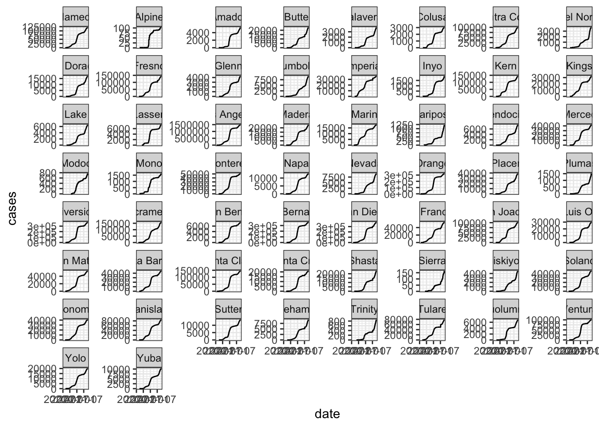
12.10 Number of observations per county
ggplot(covid_df, aes(fct_rev(fct_infreq(county)))) +
# geom_bar() +
geom_point(stat = 'count') +
geom_segment(stat = 'count',
aes(xend = county),
yend = 0) +
coord_flip() +
labs(x = 'county')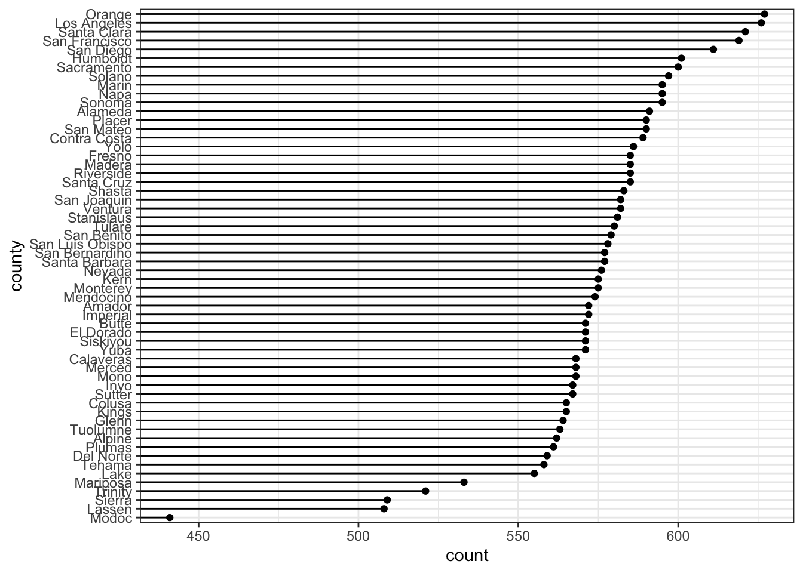
Why do different counties have different numbers of observations?
12.11 No more than 1 observation per county per day
covid_df |>
count(county, date) |>
filter(n > 1) |>
nrow() |>
identical(0L) |>
assert_that(msg = 'More than 1 observation per county per day')count: now 33,322 rows and 3 columns, ungroupedfilter: removed all rows (100%)[1] TRUE12.12 Cumulative vs. daily cases
Both cases and deaths are cumulative, not the daily new value
covid_df |>
filter(county == 'Merced') |>
ggplot(aes(date, cases)) +
geom_line()filter: removed 32,754 rows (98%), 568 rows remaining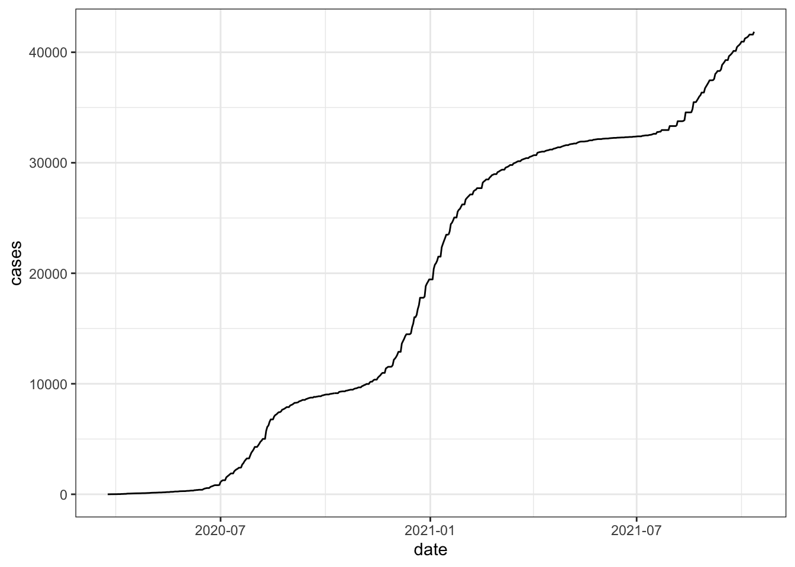
- We’ll write a little function to calculate the differences
- Incorporate it into the pipe that loads the data
- Then restart R and rerun
daily_new = function(x, order_var) {
diff = x - dplyr::lag(x, order_by = order_var)
return(diff)
}- Test it on Orange and LA Counties
covid_df |>
filter(county %in% c('Orange', 'Los Angeles')) |>
group_by(county) |>
mutate(across(.cols = c(cases, deaths),
.fns = list(new = daily_new), date)) |>
select(date, county, matches('cases'), matches('deaths')) |>
View()Now we have daily values
covid_df |>
filter(county == 'Merced') |>
ggplot(aes(date, cases_new)) +
geom_line()filter: removed 32,754 rows (98%), 568 rows remainingWarning: Removed 1 row(s) containing missing values (geom_path).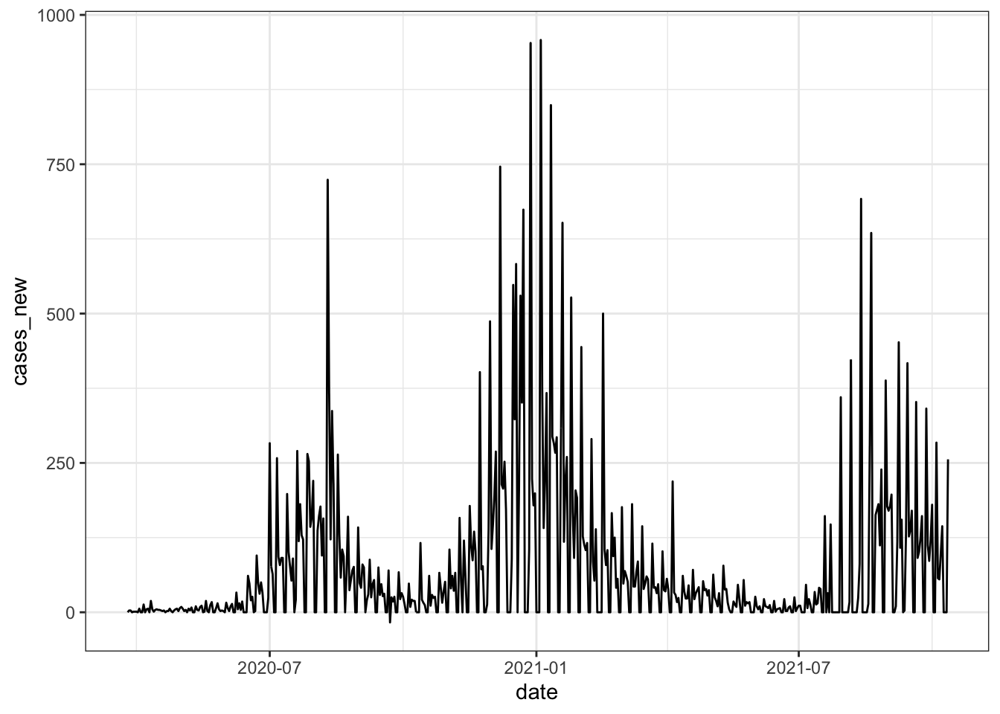
12.13 Add an assertion
- For each county, the first daily diff should be
NA - But none of the others
covid_df |>
group_by(county) |>
slice(-1) |>
pull(cases_new) |>
is.na() |>
any() |>
magrittr::not() |>
assert_that(msg = 'missing values in cases_new')group_by: one grouping variable (county)slice (grouped): removed 58 rows (<1%), 33,264 rows remaining[1] TRUE12.14 Distribution of cases by county
First pass is hard to read
ggplot(covid_df, aes(county, cases_new)) +
geom_boxplot()Warning: Removed 58 rows containing non-finite values (stat_boxplot).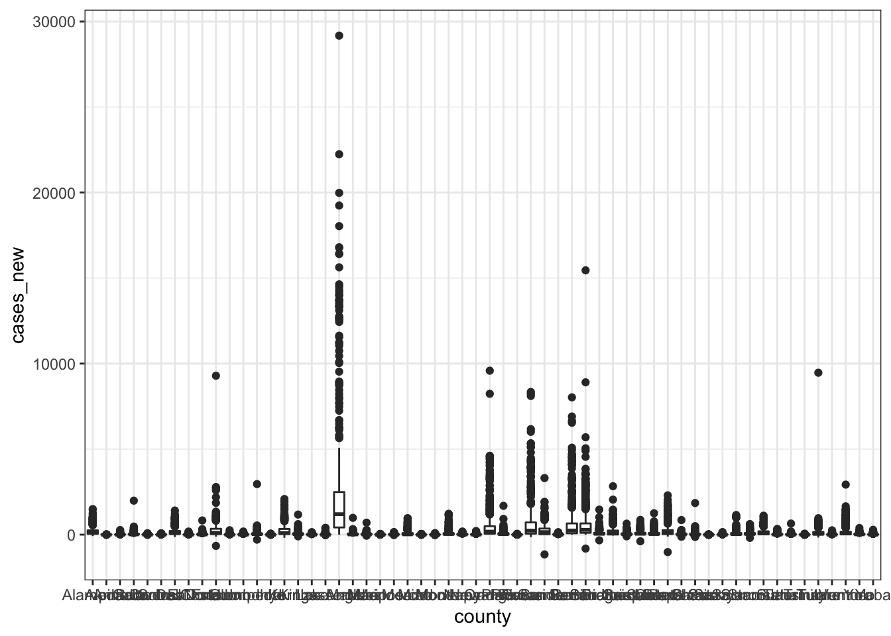
12.15 Revisions
coef = 1000- y-axis on a log scale
- flip the coordinates
- reorder the counties by median number of cases
- filter out
cases_new == 0 - meaningful axis labels
covid_df |>
filter(cases_new > 0) |>
ggplot(aes(fct_reorder(county, cases_new,
.fun = median, na.rm = TRUE),
cases_new)) +
geom_boxplot(coef = 1000) +
scale_y_log10() +
coord_flip() +
labs(x = 'county', y = 'daily new cases')filter: removed 9,133 rows (27%), 24,189 rows remaining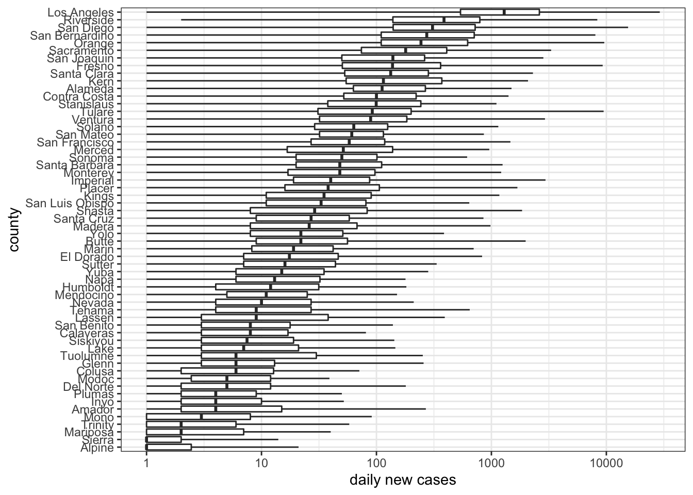
12.16 9 plots of the same plot
ggplot(covid_df, aes(x = cases_new, y = deaths_new)) +
# geom_point() +
# geom_point(alpha = .2) +
# geom_count(alpha = .5) +
# geom_bin2d() +
# geom_hex() +
# geom_hex(aes(color = after_stat(count))) +
# geom_density2d(size = 1) +
# stat_density2d(contour = FALSE, geom = 'raster',
# aes(fill = after_stat(density)),
# show.legend = FALSE) +
stat_density2d(contour = TRUE, geom = 'polygon',
aes(fill = after_stat(level)),
show.legend = FALSE) +
scale_x_log10() +
scale_y_log10() +
scale_color_viridis_c(aesthetics = c('color', 'fill'))Warning in self$trans$transform(x): NaNs producedWarning: Transformation introduced infinite values in continuous x-axisWarning in self$trans$transform(x): NaNs producedWarning: Transformation introduced infinite values in continuous y-axisWarning: Removed 25048 rows containing non-finite values (stat_density2d).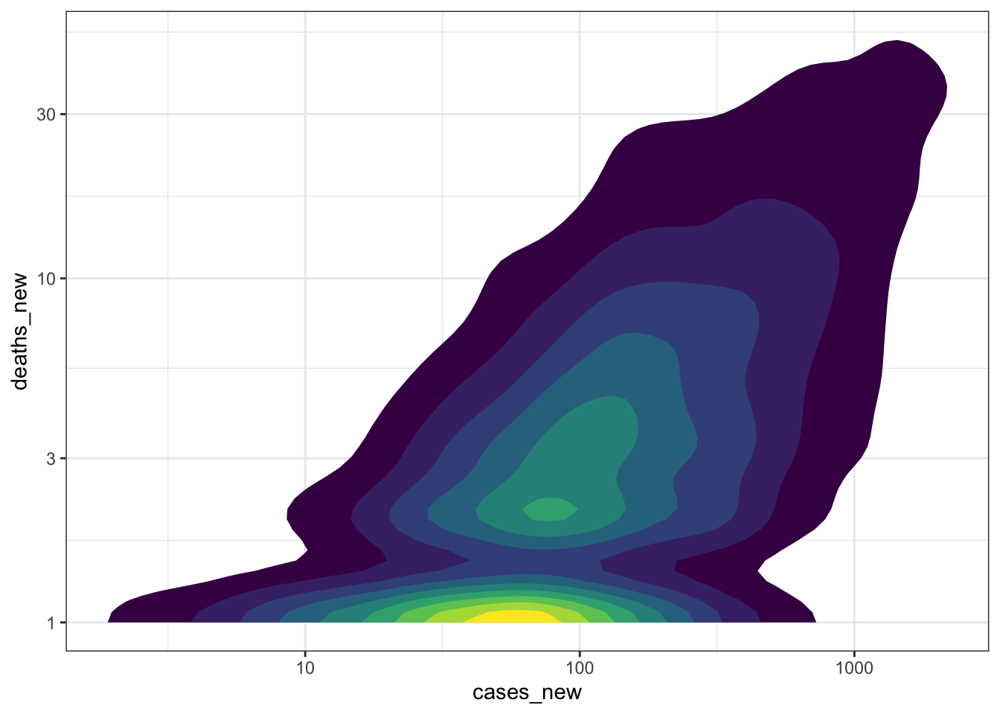
12.17 Why so many dropped values?
- The binned plots drop 25,048 rows, or 75% of the data
- Why?
covid_df |>
mutate(log_cases_new = log(cases_new)) |>
select(cases_new, log_cases_new) |>
filter(!is.finite(log_cases_new)) |>
count(cases_new) |>
arrange(desc(n))Warning in log(cases_new): NaNs producedmutate: new variable 'log_cases_new' (double) with 1,682 unique values and 1% NAselect: dropped 18 variables (date, county, state, fips, cases, …)filter: removed 24,189 rows (73%), 9,133 rows remainingcount: now 58 rows and 2 columns, ungrouped# A tibble: 58 × 2
cases_new n
<dbl> <int>
1 0 8829
2 -1 113
3 NA 58
4 -2 27
5 -3 11
6 -6 9
7 -8 8
8 -17 4
9 -12 4
10 -5 4
# … with 48 more rows12.18 Cases vs. population
ggplot(covid_df, aes(population, cases_new)) +
geom_point()Warning: Removed 58 rows containing missing values (geom_point).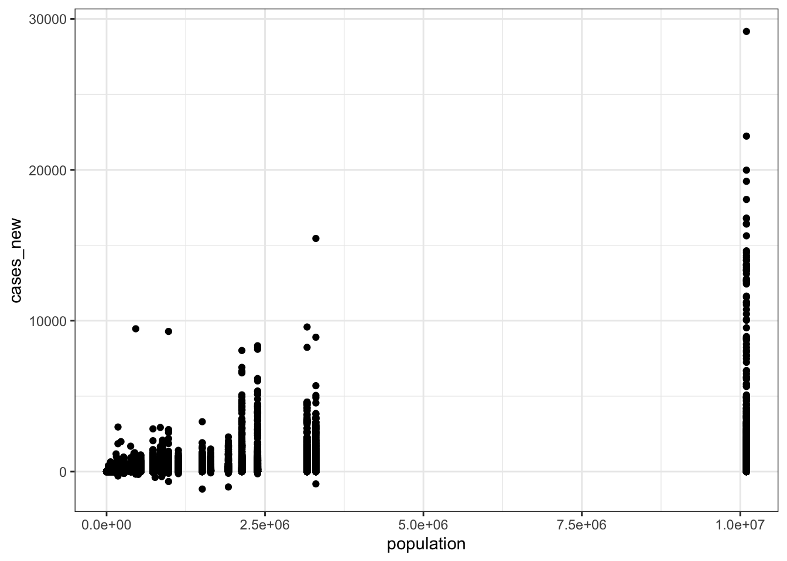
12.19 Absolute counts to rates
casesanddeathsare absolute counts- But county populations differ over orders of magnitude
- Construct a lollipop plot to illustrate this
covid_df |>
select(county, population) |>
distinct() |>
ggplot(aes(x = fct_reorder(county, population),
y = population)) +
geom_point() +
geom_segment(aes(xend = county), yend = 0) +
scale_y_log10() +
coord_flip()select: dropped 17 variables (date, state, fips, cases, deaths, …)distinct: removed 33,264 rows (>99%), 58 rows remaining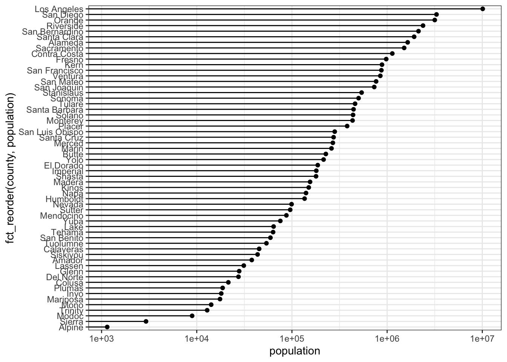
Let’s calculate rates for new and cumulative cases and deaths
test_df = covid_df |>
mutate(across(.cols = c(matches('cases'), matches('deaths')),
.fns = list(rate = ~ .x / population * 100000)))mutate: new variable 'cases_rate_rate' (double) with 24,355 unique values and 0% NA new variable 'cases_new_rate_rate' (double) with 9,755 unique values and <1% NA new variable 'deaths_rate_rate' (double) with 8,485 unique values and 0% NA new variable 'deaths_new_rate_rate' (double) with 1,056 unique values and <1% NAtest_df |>
filter(county %in% c('Merced', 'Fresno', 'Los Angeles')) |>
ggplot(aes(date, cases_new_rate,
group = county, color = county)) +
geom_line()filter: removed 31,543 rows (95%), 1,779 rows remainingWarning: Removed 3 row(s) containing missing values (geom_path).
Incorporate this into the pipe when we load covid_df
12.20 Rates vs. population
ggplot(covid_df, aes(population, cases_new_rate)) +
geom_point()Warning: Removed 58 rows containing missing values (geom_point).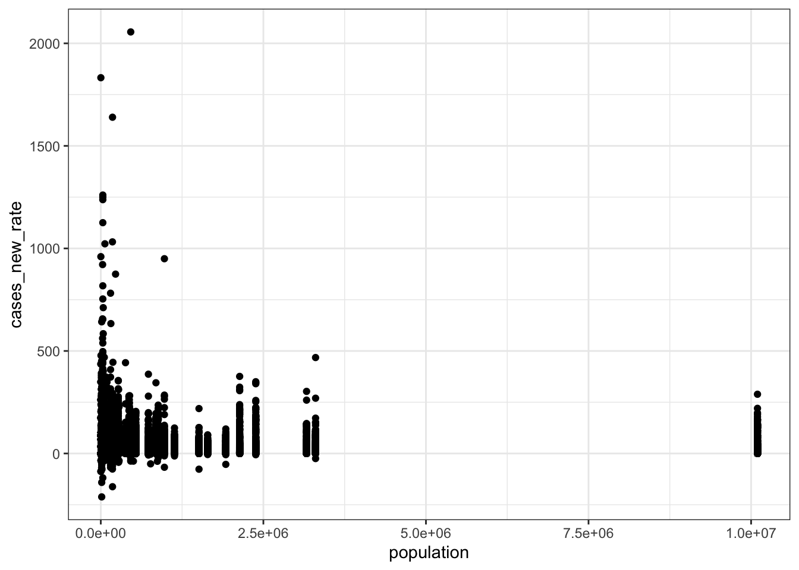
12.21 Counties by maximum rate of new cases
covid_df |>
group_by(county) |>
summarize(population = max(population),
cases = max(cases_new_rate, na.rm = TRUE)) |>
arrange(desc(cases))group_by: one grouping variable (county)summarize: now 58 rows and 3 columns, ungrouped# A tibble: 58 × 3
county population cases
<chr> <dbl> <dbl>
1 Tulare 460477 2056.
2 Alpine 1146 1832.
3 Imperial 180216 1640.
4 Lassen 31185 1260.
5 Shasta 179085 1032.
6 Tehama 63373 1023.
7 Fresno 978130 950.
8 Glenn 27897 921.
9 Butte 227075 875.
10 Kings 150075 782.
# … with 48 more rows12.22 Cases vs. deaths when we control for population
ggplot(covid_df, aes(x = cases_new_rate, y = deaths_new_rate)) +
# geom_point() +
geom_point(alpha = .2) +
# geom_count(alpha = .5) +
# geom_bin2d() +
# geom_hex() +
# geom_hex(aes(color = after_stat(count))) +
# geom_density2d(size = 1) +
# stat_density2d(contour = FALSE, geom = 'raster',
# aes(fill = after_stat(density)),
# show.legend = FALSE) +
# stat_density2d(contour = TRUE, geom = 'polygon',
# aes(fill = after_stat(level)),
# show.legend = FALSE) +
scale_x_log10() +
scale_y_log10() +
scale_color_viridis_c(aesthetics = c('color', 'fill'))Warning in self$trans$transform(x): NaNs producedWarning: Transformation introduced infinite values in continuous x-axisWarning in self$trans$transform(x): NaNs producedWarning: Transformation introduced infinite values in continuous y-axisWarning: Removed 556 rows containing missing values (geom_point).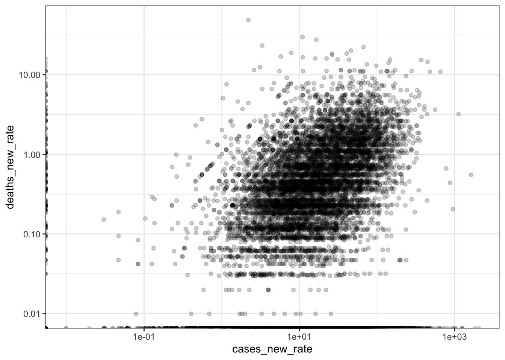